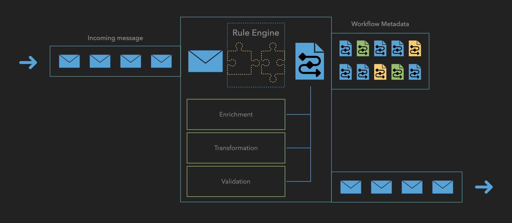

Workflow Processor: Detailed Component Architecture
The Workflow Processor serves as the core processing engine, orchestrating the entire message handling lifecycle. Here's a detailed breakdown of its key components:

1. Incoming Message Queue
- Primary Function:
- Initial reception point for payment messages
- Message buffering and queuing
- Load balancing support
- Key Features:
- High-throughput message intake
- Traffic spike handling
- Message persistence
- Order preservation
2. Rule Engine
- Core Responsibilities:
- Workflow selection and assignment
- Processing rule application
- Dynamic decision making
- Workflow Matching Criteria:
- Payment type
- Message originator
- Geographic region
- Message attributes
- Business rules
- Integration Points:
- Direct access to Workflow Metadata
- Connection to validation services
- Interface with enrichment systems
3. Workflow Execution Steps
The Workflow Processor supports flexible combinations of three core processing tasks that can be arranged in any order and repeated as needed within a workflow:
Core Processing Tasks
-
Enrichment:
- Customer information addition
- Account detail enhancement
- Regulatory compliance data inclusion
- External data retrieval
-
Validation:
- Data integrity checks
- Mandatory field validation
- Format verification
- Regulatory compliance checks
-
Transformation:
- Format conversions
- Data mapping
- Schema adjustments
The actual sequence depends on:
- Message type requirements
- Business rules
- Regulatory needs
- Destination system requirements
Each step can be:
- Repeated multiple times
- Applied conditionally
- Executed in parallel where appropriate
- Skipped based on conditions
4. Workflow Metadata
- Purpose:
- Workflow configuration storage
- Processing step definitions
- Business rule management
- Structure:
- Workflow definitions
- Processing sequences
- Rule sets
- Configuration parameters
- Access Patterns:
- Rule Engine reference
- Dynamic workflow loading
- Configuration updates
5. Outbound Message Queue
- Functions:
- Processed message buffering
- Destination routing
- Delivery management
- Features:
- Multiple destination support
- Retry handling
- Load balancing
- Message persistence